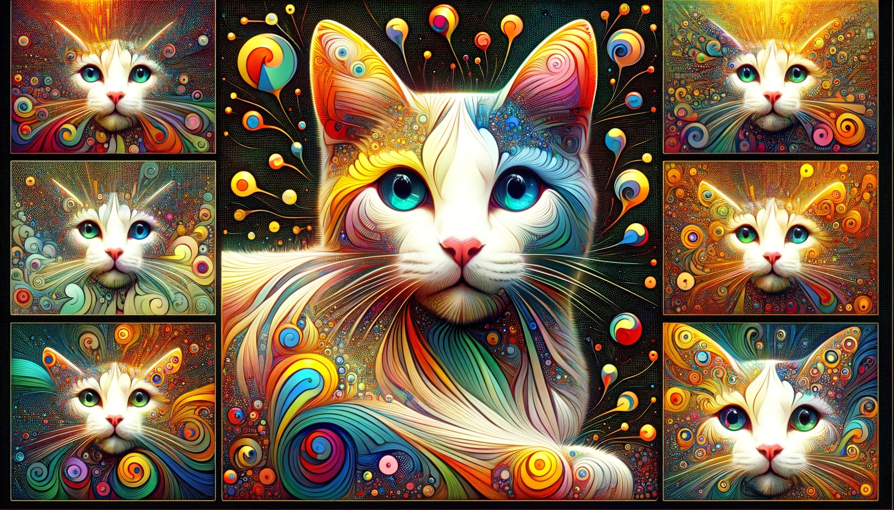
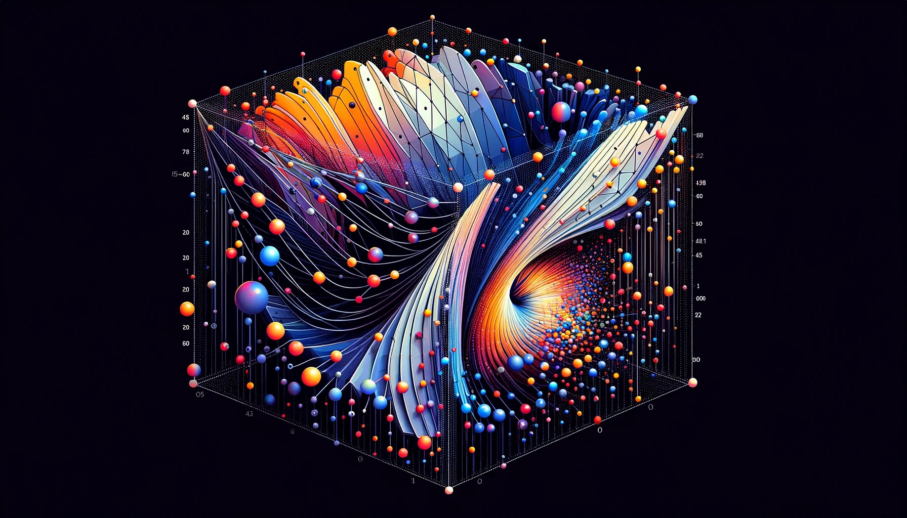
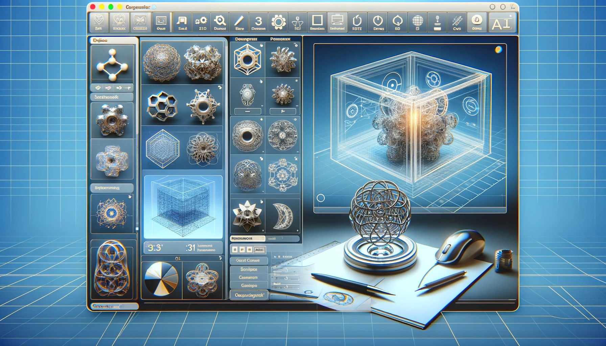

생성형 AI 입문#
생성형 AI의 기본 개념#
생성형 AI 정의 및 개요#

정의: 데이터의 분포를 학습하여 새로운 데이터를 생성하거나 변형하는 AI 기술
기술적 배경: 기계 학습과 심층 학습의 발전에 기반
목표: 실제와 유사한 데이터 생성
응용 분야: 자연어 처리, 컴퓨터 비전, 음성 인식 등
개인화된 콘텐츠 제작: 사용자 맞춤형 추천 시스템, 개인화된 콘텐츠 생성
생성형 AI와 기존 AI 기술과의 차이점#
{kind=link}
데이터 처리 방식의 차이: 기존 AI는 데이터 분석과 패턴 인식에 초점, 생성형 AI는 새로운 데이터 생성에 중점
창의적 결과물 생성: 기존 데이터에서 규칙 학습하여 새로운 창의적 결과물 생성
응용 분야의 확장: 예술적 이미지 생성, 새로운 음악 작곡 등 창의적 분야에서 활용
사용자 경험의 향상: 맞춤형 콘텐츠 제공을 통한 사용자 경험 개선
기술적 복잡성: 새로운 데이터 생성을 위한 복잡한 모델링 요구
생성형 모델 vs 판별형 모델#
생성형 모델
목적: 새로운 데이터 생성에 초점
학습 과정: 관찰된 데이터 분포 학습 및 새로운 데이터 포인트 생성
데이터 이해: 기본 구조와 패턴 이해를 바탕으로 실제와 유사한 데이터 생성
응용 예시: 이미지 생성, 텍스트 이어 쓰기, 음악 조합
판별형 모델
목적: 데이터 분석 및 범주 판별
분석 과정: 입력 데이터 특성 분석 및 분류 또는 회귀 예측 수행
데이터 처리: 분석을 통한 특정 범주나 클래스 소속 판별
응용 예시: 객체 인식, 감정 분석, 스팸 메일 필터링
생성형 AI의 핵심 알고리즘과 기술적 특성#

GAN(생성적 적대 신경망)
구조: 생성자와 판별자의 경쟁 학습
목적: 사실적인 데이터 생성
예: 이미지 생성, 스타일 변환
VAE(변분 오토인코더)
기능: 중요 특징 추출 및 새로운 데이터 생성
특징: 데이터 재구성 및 변형에 유용
예: 이미지 복원, 변형
RNN(순환 신경망)
특징: 시간적 데이터 학습 최적화
용도: 텍스트, 음악 생성 등 순차적 데이터 처리
예: 문장 생성, 음악 작곡
Transformer
강점: 문맥 이해 및 관련 출력 생성에서 우수
사용: 주로 자연어 처리(NLP) 분야
예: 기계 번역, 텍스트 요약
생성형 AI 생성 과정#
데이터 수집#

목적: 콘텐츠 생성을 위한 예시 데이터 수집
예시: 다양한 고양이 이미지 데이터셋 수집
중요성: 모델 성능에 직접적인 영향을 미치는 데이터의 질과 다양성
데이터 품질: 생성된 콘텐츠의 질에 영향
처리 과정: 학습에 적합한 형태로 데이터 전처리
훈련#

기술 활용: 딥러닝 기반의 생성형 모델(GANs, VAEs 등) 훈련
패턴 분석: 데이터셋의 패턴, 구조, 특성 분석
학습 과정: 데이터의 기본적 특성 및 내재된 특징 학습
알고리즘 접근: 콘텐츠 생성을 위한 다양한 알고리즘 활용
학습 목표: 실제와 유사한 콘텐츠 생성 능력 향상
잠재 공간 표현#

정의 및 역할: 데이터의 패턴과 특성을 수학적으로 압축, 추상화
생성 과정: 잠재 공간에서 샘플링하여 새로운 콘텐츠 생성
중요성: 생성된 콘텐츠의 질과 다양성에 핵심적 영향
활용: 새로운 콘텐츠 생성에 필요한 정보 저장
생성#
{kind=link}
과정 설명: 잠재 공간에서 새로운 콘텐츠 생성
방법: 점 샘플링 및 원본 형식으로 디코딩
예시: 잠재 공간에서 샘플링한 점을 이용한 새 고양이 이미지 생성
변형과 결과: 다양한 변형을 통한 새로운 콘텐츠 생성
결과물: 기존에 없던 이미지, 텍스트, 음악 등 생성
반복적 개선#
{kind=link}
개선 과정: 생성된 콘텐츠 평가 및 매개변수 조정을 통한 개선
평가와 조정: 생성 품질 평가 및 성능 향상을 위한 조정
개선 목표: 만족스러운 결과물 생성까지 반복 개선
중요성: 더 정교하고 사실적인 콘텐츠 생성을 위한 핵심 과정
생성 모델의 작동 원리#
확률 모델링#

활용 기술: 훈련 데이터의 분포를 포착하기 위해 확률 모델링 사용
목적: 데이터의 확률 분포 모델링 및 학습된 분포로부터 샘플링을 통한 새 샘플 생성
데이터 유형: 연속 데이터의 경우 가우시안 분포, 이산 데이터의 경우 범주형 분포 선택
확률 분포 선택: 생성하고자 하는 데이터 유형에 따라 확률 분포 선택이 달라짐
활용 예시: 텍스트, 이미지, 음악 등 다양한 데이터 유형 생성에 활용
잠재 공간 표현#
{kind=link}
기술적 접근: 자동인코더나 변이형 자동인코더 같은 기술을 사용하여 잠재 공간 표현 학습
역할: 데이터의 변화를 설명하는 기본 요소나 특징을 포착
샘플링 및 디코딩: 잠재 공간에서 점을 샘플링하고 이를 디코딩하여 새 샘플 생성
중요성: 데이터의 다양성과 질을 결정짓는 핵심 요소
응용: 새로운 이미지, 텍스트 등의 생성에 활용
적대적 훈련#

구조: 생성자와 판별자라는 두 경쟁 신경망으로 구성된 GANs 사용
원리: 생성자는 합성 샘플을 생성하고, 판별자는 진짜와 생성된 샘플을 구별하려 함
반복 학습: 생성자는 판별자를 속이는 샘플을, 판별자는 구별 능력을 향상
결과: 점점 더 현실적인 샘플 생성
적용: 사실적인 이미지, 비디오, 음성 생성 등에 활용
자기회귀 모델링#

기술: 순차적 데이터 생성을 위한 RNNs 같은 자기회귀 모델 사용
원리: 시퀀스 내 각 요소를 이전 요소들에 기반하여 조건부 확률 모델링
생성 과정: 시퀀스를 예측하며 새 데이터 생성
응용: 텍스트 작성, 음악 작곡 등 순차적 데이터 생성
특징: 이전 정보를 기반으로 다음 요소를 예측
재구성 및 오류 최소화#

기술: VAEs와 같은 모델은 잠재 공간에서 입력 데이터를 재구성
목적: 입력과 재구성된 출력 간의 재구성 오류 최소화
과정: 데이터를 잠재 공간으로 인코딩 후 원본 공간으로 디코딩
결과: 새 샘플 생성
응용: 데이터의 변형, 개선, 새로운 샘플 생성에 활용
생성형 AI의 활용 사례#
이미지 합성 및 편집#

활용 분야: 컴퓨터 그래픽, 예술, 디자인
기능: 주어진 입력이나 특정 기준에 기반한 현실적인 이미지 생성
응용 예: 가상 환경 생성, 시각 효과, 새로운 이미지 조작
장점: 창의적이고 맞춤화된 이미지 제작 가능
주의점: 저작권과 윤리적 고려 필요
텍스트 생성 및 자연어 처리#

활용 분야: 챗봇, 가상 비서, 언어 번역, 언론 매체 내용 생성
기능: 맥락적으로 관련성이 높고 일관된 텍스트 생성
응용 예: 사용자 질문에 대한 자동 응답, 다양한 언어로의 번역
장점: 언어적 다양성 및 접근성 향상
주의점: 인간의 감성과 미묘한 언어 뉘앙스 재현의 한계
음악 작곡#

활용 분야: 음악가, 작곡가, 프로듀서 지원
기능: 기존 작품에서 학습한 패턴과 스타일을 바탕으로 원래 음악 작곡
응용 예: 새로운 멜로디, 화음, 편곡 생성
장점: 창의적인 음악적 아이디어와 실험 촉진
주의점: 음악적 감성과 개인적 스타일 표현의 한계
비디오 게임 디자인#

활용 분야: 게임 개발, 동적 게이밍 경험 제공
기능: 지형, 환경, NPC, 퀘스트, 내러티브 생성
응용 예: 절차적 콘텐츠 생성을 통한 게임 다양성 및 몰입감 향상
장점: 게임 디자인 과정의 효율성 및 창의성 증가
주의점: 게임 내러티브와 사용자 경험의 일관성 유지 필요
데이터 증강#

활용 분야: 기계 학습 모델 훈련, 성능 및 일반화 개선
기능: 기존 데이터셋을 보완하기 위한 합성 데이터 생성
응용 예: 레이블링된 데이터 부족 시 합성 데이터 활용
장점: 모델의 정확도와 신뢰성 향상
주의점: 합성 데이터와 실제 데이터 간의 차이 인식
제품 디자인 및 프로토타이핑#
{kind=link}
활용 분야: 디자인 변형 생성, 신속한 프로토타입 제작
기능: 3D 모델, 건축 디자인, 시각적 표현 생성
응용 예: 디자인 과정에서의 다양한 아이디어 시각화 및 평가
장점: 창의적인 디자인 과정의 효율성 및 다양성 증가
주의점: 디자인의 실현 가능성과 사용자 요구 사항 충족
의료 영상 및 약물 발견#

활용 분야: 의료 진단, 약물 설계 및 최적화
기능: 의료 영상 품질 개선, 누락 정보 보완, 새로운 분자 구조 생성
응용 예: 질병 탐지 정확도 향상, 약물 개발 가속화
장점: 의료 및 제약 산업의 혁신 촉진
주의점: 합성 데이터의 정확성 및 신뢰성 검증 필요
생성형 AI의 장점#
창의성과 새로움#
{kind=link}
콘텐츠 창출: 이미지, 음악, 텍스트 등 새롭고 독특한 콘텐츠 생성 가능
혁신적 결과물: 기존에 없던 창의적이고 원본적인 아웃풋 제공
자동화 및 효율성#

콘텐츠 생성 자동화: 시간과 자원을 절약하며 대량의 콘텐츠를 빠르고 효율적으로 생성
응용 분야: 데이터 증강, 콘텐츠 생성, 디자인 탐색 등에서 활용
개인화 및 맞춤화#
{kind=link}
특정 데이터 학습: 사용자의 선호나 특정 데이터에 기반한 개인화된 추천 및 맞춤 콘텐츠 제공 가능
사용자 경험 맞춤화: 맞춤형 사용자 경험과 콘텐츠 제공으로 이어짐
탐색 및 영감#

창의적 가능성 탐색: 아티스트, 디자이너, 작가에게 다양한 변형과 창의적 가능성 제공
영감 제공: 창작 활동의 출발점이 될 수 있는 영감을 제공
생성형 AI의 단점#
윤리적 우려#

합성 미디어의 오남용: 딥페이크 및 지적 재산권 침해와 같은 윤리적 문제 발생 가능
책임 있는 사용 필요: 악의적이거나 기만적인 용도로의 사용을 피하기 위한 주의 필요
제어의 어려움#
{kind=link}
결과물 제어: 생성 모델이 특정 요구사항이나 지침에 따라 세밀하게 조정되기 어려움
예상치 못한 출력: 원하는 기대치나 지침을 항상 충족시키지 못할 수 있음
데이터셋 편향 및 일반화#

훈련 데이터의 한계: 훈련 데이터가 편향되거나 제한적일 경우, 생성된 출력물도 이러한 편향을 상속받을 수 있음
일반화의 어려움: 보지 못한 시나리오로 일반화하는 데 어려움을 겪을 수 있음
계산 자원 및 복잡성#

자원 요구사항: 훈련과 배포가 계산 집약적이며 고성능 하드웨어와 상당한 훈련 시간 필요
구현 및 유지 관리의 복잡성: 모델의 구현과 유지 관리가 복잡하고 자원을 많이 요구함
품질 및 일관성#

품질 문제: 생성 모델이 일관되게 높은 품질과 맥락적 관련성을 가진 출력을 생성하는 데 어려움을 겪을 수 있음
미세 조정의 필요성: 원하는 결과를 얻기 위해 세심한 모델 선택과 미세 조정이 필요할 수 있음